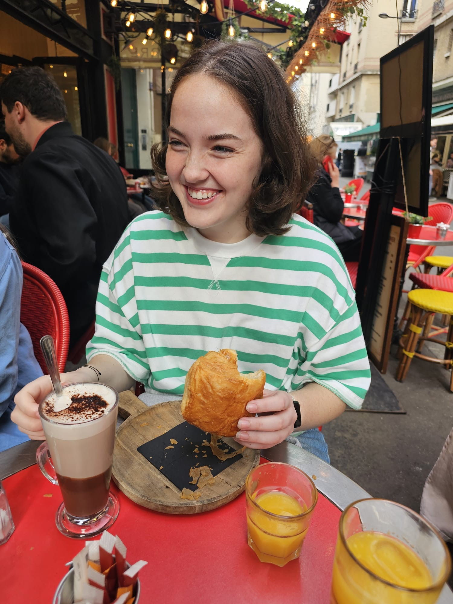

Hi, I'm Riley Willard, a student at the Savannah College of Art and Design majoring in 3D Character Animation. With a deep love for animation and its power to tell stories, I’m passionate about bringing characters and worlds to life through movement and design. While I value every part of the animation pipeline, I’m especially drawn to production—there’s something magical about seeing a story come together, frame by frame.
Growing up in a big family of movie extremists, storytelling was always at the center of my life. My dad’s love for film quickly became a family trait, and to this day, none of us can resist quoting Flynn Rider’s first appearance. As tacky as it may sound, it was through the warmth, humor, and shared love of movies in my family that I became deeply invested in cinema and art.
This portfolio represents both my passion and my preparation as I take the next step into the animation industry. My goal is to contribute to 3D animated features by combining creative storytelling with strong technical skills, and to create work that inspires, entertains, and connects with audiences around the world.